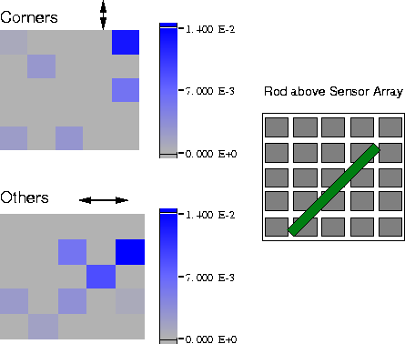

Figure 4: Image of a threaded #10 rod placed above the GMR array. On the left, the gray-scale images show the response of the elements to the magnetic field emanating from the rod. The "corners" image shows only data from the elements with a vertical axis of sensitivity, while the "others" image shows data from the elements with a horizontal axis of sensitivity.